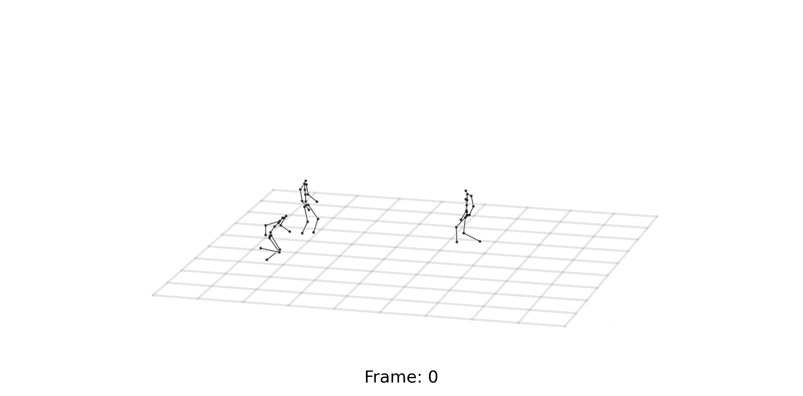
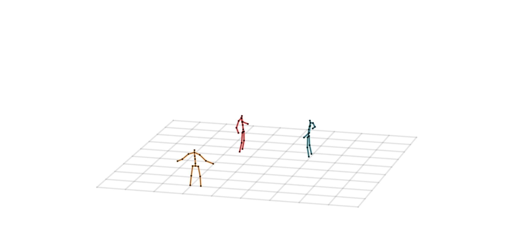
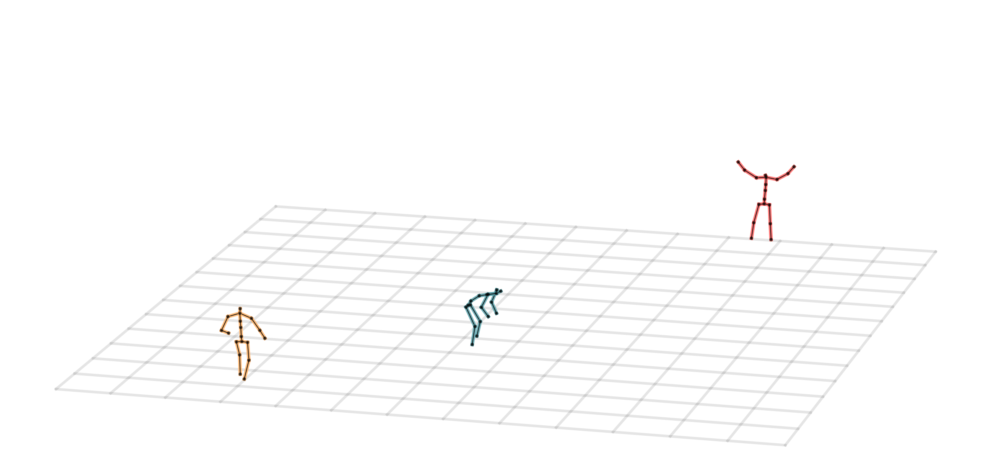
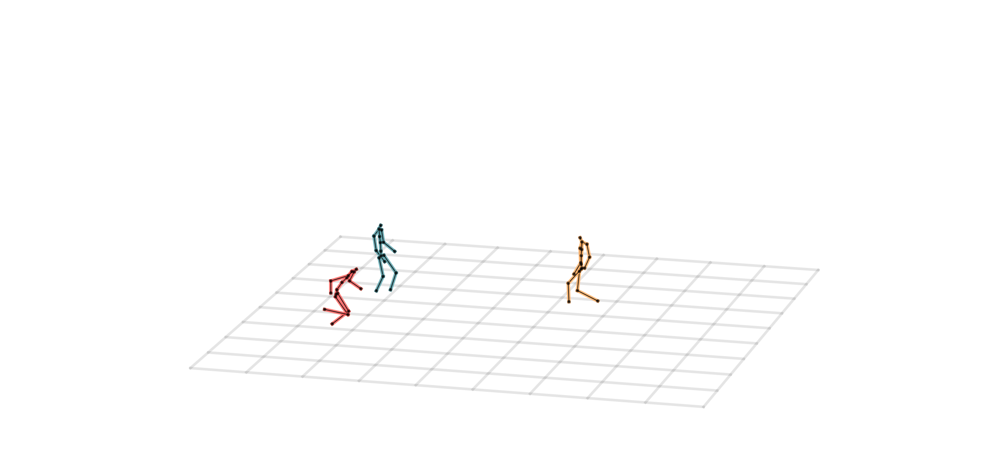
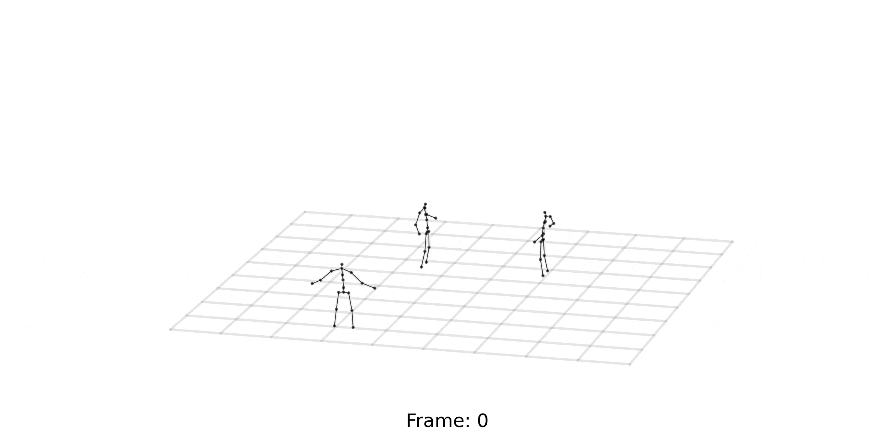
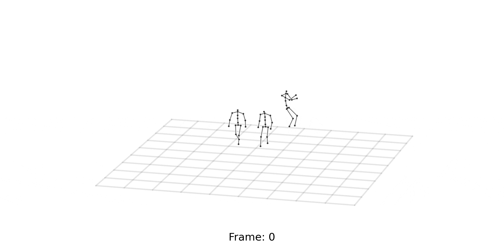
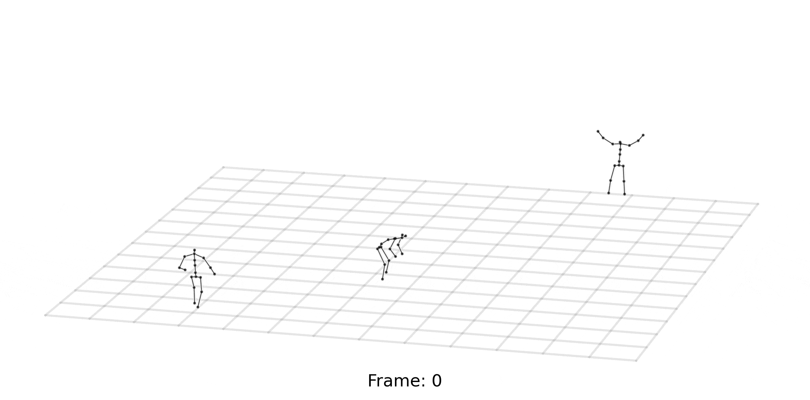

Our MI-Motion Dataset comprises approximately 167k sequence frames involving 3~6 subjects. Each subject is represented by 20 body 3D keypoints, and performed interactions with other individuals with different interaction levels. To simulate various activity scenes, we divide the dataset into five subsets: park, street, indoor, special locations, and complex crowd.
See README for detailed instructions.
Please see our benchmark results on short-term and long-term prediction in the paper. We release our benchmark code and other baseline codes at Github. For ultra-long-term prediction, we attach the visualization results below.
| Park | Indoor | Street | Special Locations | Complex Crowd | |
|---|---|---|---|---|---|
| HRI |  |  |  |
|
|
| MRT |  |  |
|
||
| TBIFormer |
|
||||
| SocialTGCN |
|
||||
| GT |
|
|
 |  |
|